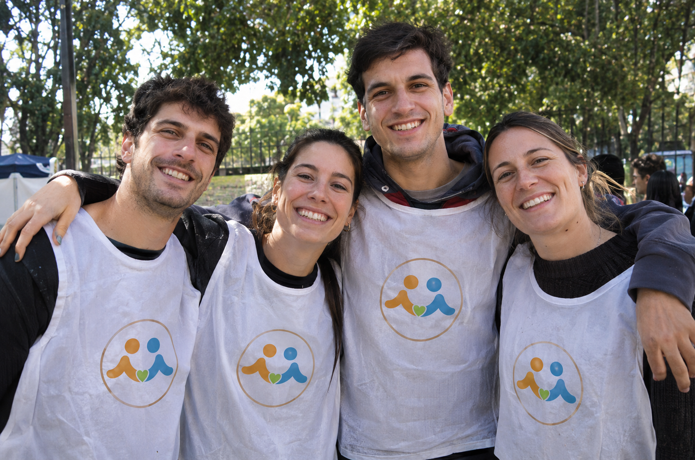

Somos un grupo de personas que realizan recorridas por Vicente López buscando gente que se encuentren en situación de vulnerabilidad, que no tengan un techo en donde puedan dormir ni un plato de comida a disposición. Nuestro propósito es visitarlos y hacerles compañía, y llevarles una porción de comida, ropa de abrigo, mantas, kits de higiene y y objetos de entretenimiento para ayudarlos a distraerse un poco de su dura realidad.
Llevamos una porción de comida, ropa de abrigo, mantas y kits de higiene.
Nos quedamos a charlar y compartir un rato. Llevamos objetos de entretenimiento para distraernos un poco.
Entregamos una bolsa o caja con mercadería no perecedera para que tengan comida disponible en los días siguientes.